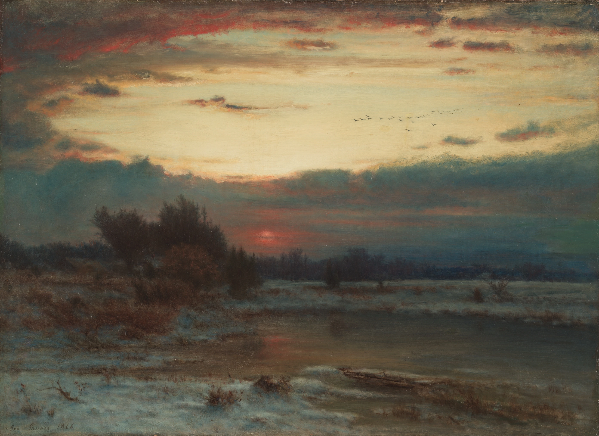

On winter evenings in Rome, over the reedbeds of the Somerset Levels, at the piers of Brighton and Aberystwyth, starlings coming in to roost gather above the place where they will sleep and fly together for half an hour before they go down. The flocks run to tens of thousands of birds, sometimes far more. They do not follow a leader. Each bird watches a handful of those nearest to it and keeps with them, and the whole cloud turns, stretches into ribbons, folds over itself and pours across the sky as one thing.
In 2008 a team in Rome filmed the flocks over Termini station with synchronised cameras and rebuilt them in three dimensions, bird by bird. Each starling, they found, keeps track of six or seven neighbours whatever the distance between them, a fixed number of birds rather than a fixed radius, and that is what lets a flock stretch thin and dense again without breaking apart.

A peregrine changes everything. When a falcon dives at the flock, the birds nearest to it bank hard away, rolling almost onto their side for a quarter of a second and back again, and their neighbours copy the roll a fraction of a second later, and theirs after them. From the ground it is a band of darkness sweeping across the cloud, because a starling seen from below and to the side is a thin dark line when it flies level, and a whole wing when it banks.
Nothing here is drawn as a wave. Every bird is flown on its own, steering by its seven nearest neighbours, banking to turn as a bird must, and drawn as its own silhouette, two wings and a body, from a camera standing in the field. Click or tap the sky and a peregrine stoops through the flock there, on its own line, and is gone. The dark bands that follow it are only many birds, one after another, turning their wings toward you. Leave the sky alone for a while and the flock comes down into the copse, and the evening is as the painter left it.